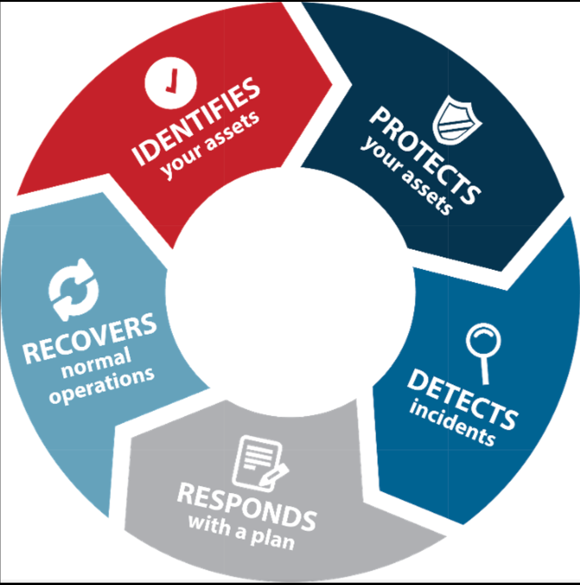
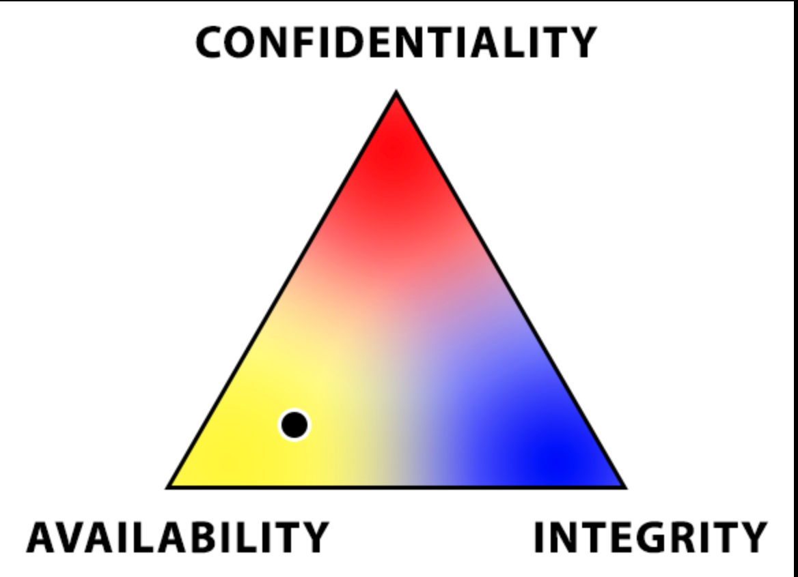

MIT App Inventor - Quiz Me
Project made with Goutham Rajagopal
This app started because I wanted to make a fun little game where someone could test their knowledge of random things in this world. It started as somewhat as a joke, with the app asking goofy questions. However, we later on added a timer and sections based on difficulty. The QuizMe app also included images for visual interaction.
Download Quiz Me
Scratch - Head Soccer
Project made with Shreyas Tulsi
Me and Shreyas started with a brainstorm, and we turned one of the brainstorms into a game. In this game, the objective is for the player to knock the soccer ball into the goal. To add a humorous twist, we used pictures of our own heads for the players. We also added a CPU, which could track the player in order to attempt to block the ball. If the CPU blocked enough balls, then the game ends. If you score certain amounts of goals, then the game levels up and the CPU reacts quicker. After beating all the levels, the player wins.
Head Soccer
Pygame - Pong
Project made by Mason Valentine
During the quarantine caused by Covid-19, I had some time to hone my Pygame skills. Pygame is a Python module that allows you to create visual games in Python. In this code, I have recreated the classic game Pong. In this game, two players can each control a padddle, with which they can bounce a moving ball back and forth. If one player lets the ball through, then the other player gains a point. A player wins when they gain 20 points. This is a simple but fun game, and the code is linked below. However, the user will have to download Python 3.8 and the Pygame extension to their computer. Instructions for this will also be provided.
Pong!1.3.1: A Dangerous Situation
In this cybersecurity project with Shreyas Tulsi and Namit Joshi, we used the Cybersecurity Lifestyle to find suspicious files in the corresponding PLTW Security Lab.
1.3.1 Presentation 2.1.3: E-Commerce Architecture
In this cybersecutiy project with Kyle Chen and Shreyas Tulsi, we weighed the CIA (Confidentiality, Integrity, and Availability) Triad in different aspects of a hypothetical e-commerce website. In addition to this, we identified the software, hardware, and protocols on the site. Finally, we built our network design, including the servers and network devices.
2.1.3 Presentation 2.2.1 Extension: Stuxnet
In this project with Zachary Kaatman and Diego Munoz Arroyo, we gave our opinion on the usage of cyberwarfare, such as the Stuxnet attack on Iran's nuclear systems. In this presentation, we detailed the numerous reasons cyberwarfare should be banned.
2.21 Stuxnet PresentationTerm Report: Quarter 1
My Quarter 1 Term Report was on cookies, the small pieces of data used to track Internet users' browsing activity. I weighed the several different positives and negatives of the widespread usage of cookies.
Cookies and Their EffectsTerm Report: Quarter 2
My Quarter 2 Term Report was on the various careers available to those pursuing a path related to cybersecurity. In my presentation, I detailed the required education and coding knowledge, where to find work, and also several specific examples of jobs in cybersecurity. This included penetration testers, security architects, and forensics analysts.
Careers in CybersecurityEscape Room Project
During the 2021-2022 school year in AP CSA for the 1st semester, I worked with several team members to work on an Escape Room Project, where the main objective was for the player to collect the prizes. We modified the base code in several ways, which included creating a help function for instuctions on the controls, as well as a quit function that automatically quits the game for the player when they collect all the coins.
Escape Room PresentationPlant Disease Detetction
For the 2nd semester of AP CSA, I worked with several team members to work on a project using the open source library PyTorch. An application to recognize plant disease when a picture of a plant is inputted was created. A major concept that was implemented into the code was transfer learning, the machinal application of one concept into a different yet related situation.
Plant Disease Detection Presentation